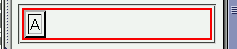
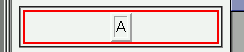

text-alignプロパティはボックス内の配置を規定するものであるが、WinIEではボックス自体の配置も変更してしまう。
<div style="text-align:center; border:2px solid red;"> <table border="2"> <tr><td>A</td></tr> </table> </div>
| A |
テーブル内（セル）は中央揃えで表示させています。
Moz1.0での表示（標準モード）
WinIE6.0での表示（標準モード）
WinIE6.0では標準・互換モードともに不具合の発生を確認しました。